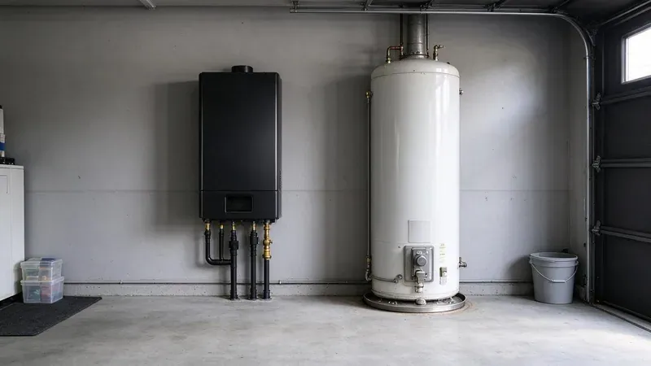

Understanding Tank Water Heaters in Connecticut Homes
For decades, the traditional tank water heater has been a staple in most American homes. These units, typically holding 40 to 80 gallons, store and heat water continuously, ensuring a ready supply when you turn on the faucet. They are a familiar sight in garages, basements, and utility closets across Connecticut. Installation costs are generally lower upfront compared to tankless units, making them an attractive option for many homeowners, especially when replacing an existing tank model.
However, traditional tanks do have their drawbacks. They continually heat water, even when you are not using it, leading to standby energy loss. This can be a factor in your monthly utility bills. Their lifespan is also limited, typically 10 to 15 years, and they are susceptible to sediment buildup, especially where the water is hard. Hard water can speed up corrosion and reduce efficiency over time, requiring periodic flushing or anode rod replacement to prolong the unit's life.
A large share of homes in Connecticut use private wells, which can be acidic or carry iron, manganese, or radon that require treatment.
The Rise of Tankless Water Heaters
Tankless water heaters, also known as on-demand water heaters, have gained wide popularity in recent years. Instead of storing hot water, these compact units heat water only when you need it. When you open a hot water tap, cold water flows into the unit, where a powerful gas burner or electric element rapidly heats it to your desired temperature. This means you get a continuous supply of hot water, which is a big advantage for larger families or homes with multiple overlapping hot water demands.
One of the biggest benefits for Connecticut homeowners is the energy efficiency. By not heating water constantly, tankless units can significantly reduce energy consumption, potentially lowering your utility bills. They also have a much longer lifespan, often 20 years or more, and take up less space, freeing up useful square footage in your utility room. This can be particularly appealing in older homes or newer construction where space is at a premium.
Cost Considerations and Installation in Connecticut
When it comes to cost, tankless water heaters typically have a higher initial purchase and installation price. A traditional tank installation might run from $1,000 to $2,500, including the unit and labor. A tankless unit, however, can range from $3,000 to $6,000 or more, especially if gas lines need to be upgraded or new venting installed. This higher upfront investment is often offset by the long-term energy savings and extended lifespan. It is important to consider the total cost of ownership over the unit's life.
- Energy Efficiency: Tankless units offer real long-term energy savings by heating water only as needed.
- Lifespan: Tankless units typically last 20 or more years, while tank units last 10 to 15 years.
- Upfront Cost: Traditional tank heaters are less expensive to buy and install initially.
- Space: Tankless heaters are compact and open up floor space.
- Hot Water Supply: Tankless provides endless hot water, while traditional tanks can run out.
Specific installation requirements, like venting for gas tankless models, can also affect the total cost. Some older homes might need upgrades to their electrical panel or gas lines to accommodate a new tankless unit, which adds to the project's complexity and expense. Our team at GLV Plumbing is familiar with local building codes and can provide accurate assessments for your home.
Local building officials here tend to inspect closely, so working with a licensed plumber who pulls permits keeps projects on track.
Which Is Right for Your Connecticut Home?
The best choice for your home depends on several factors, including your budget, hot water needs, and long-term energy goals. If you have a smaller household, a tight budget, or are replacing a relatively new tank heater, sticking with a traditional tank might be the most sensible choice. However, if you are looking for long-term savings, endless hot water, and have the upfront budget, a tankless unit could be an excellent investment for your Connecticut residence. Many homeowners in growing metro areas are choosing tankless systems in new construction or major remodels.
When to Call a Professional
Whether you are considering an upgrade, a new installation, or need repairs, it is crucial to work with experienced plumbing professionals. Water heater installation involves complex plumbing, gas, and electrical work that should always be handled by licensed experts. Incorrect installation can lead to safety hazards, void warranties, and cause expensive damage. Our team at GLV Plumbing has years of experience with both tank and tankless water heater systems across Connecticut. We can help you assess your home's specific needs, recommend the best solution, and ensure a safe, efficient installation. Don't hesitate to call us at (860) 487-7330 for dependable service and expert advice on your water heating needs.
Need a licensed plumber in Connecticut?
GLV Plumbing answers 24/7 and offers same-day service across Connecticut.